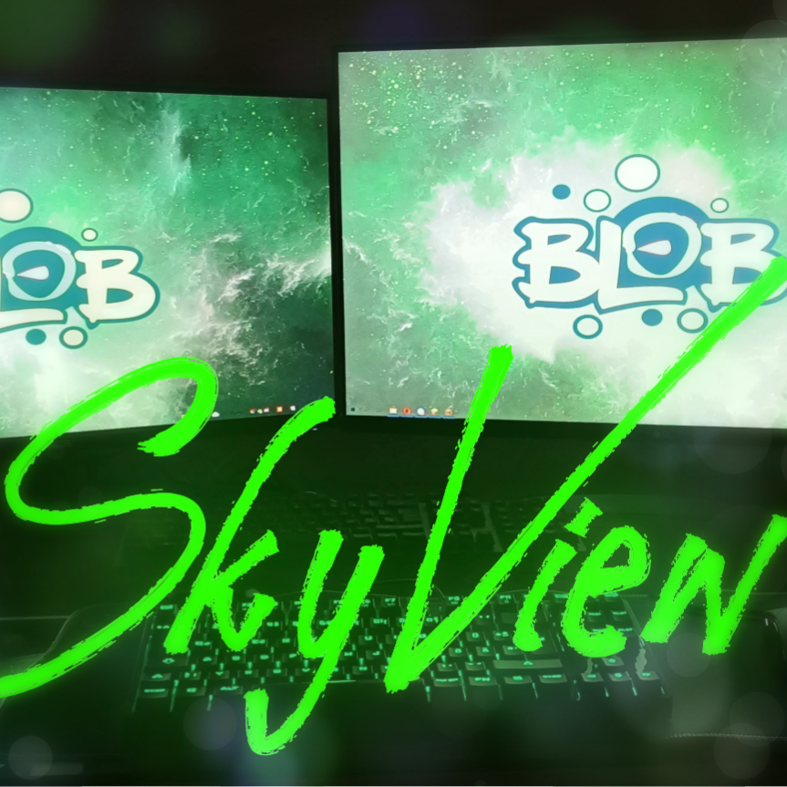
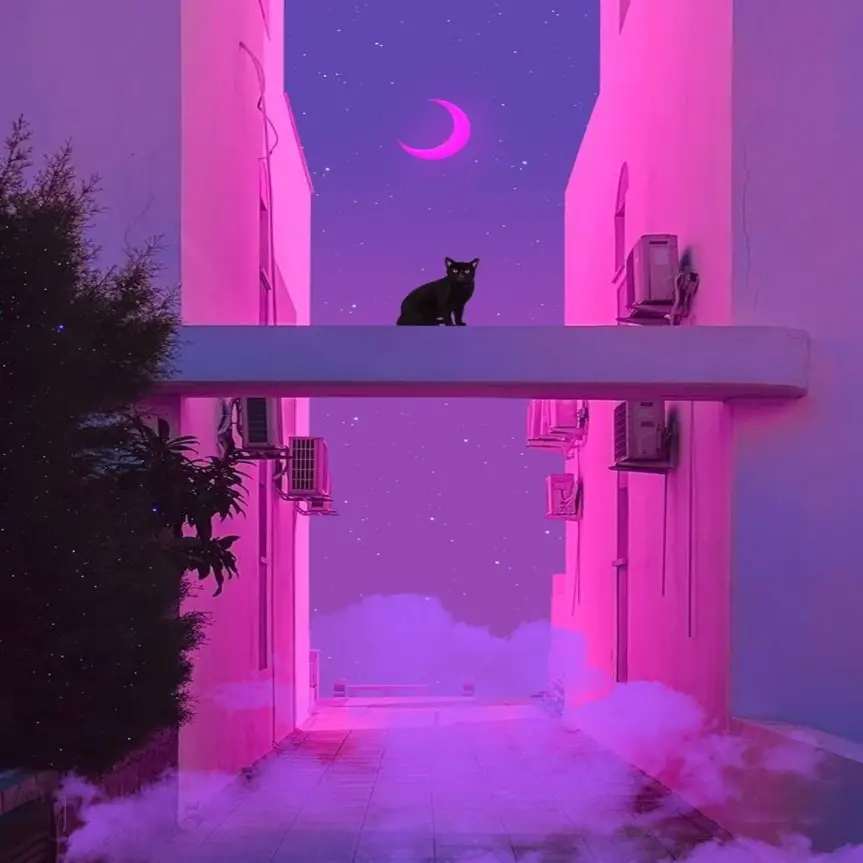

Sky
View's
Free time project
About us
We are working on this website for fun! :D
Developers

SkyView
github [#142]
Created with Sketch.
Github

Strahinja
the coolio
Get the latest updates
Join the Official Blob.io discord